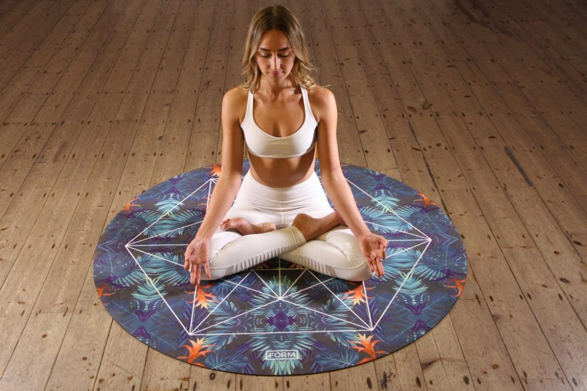
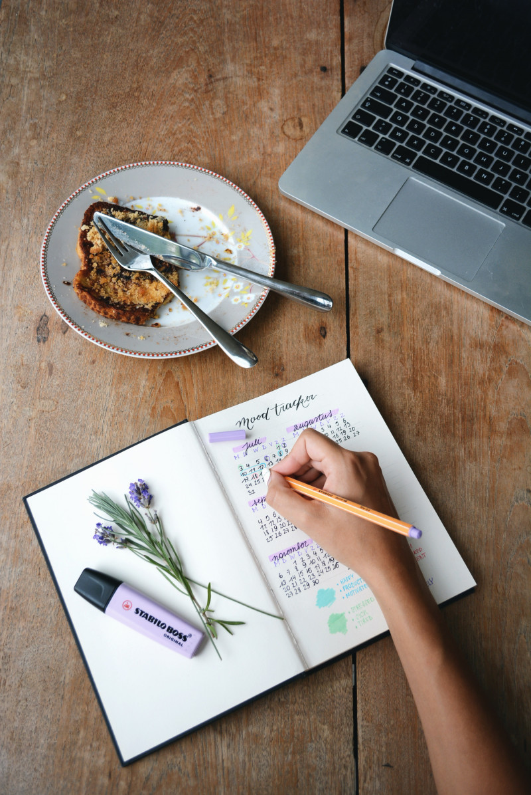

NHỮNG ĐIỀU GIÚP THƯ THÁI TINH THẦN Một tinh thần tốt ảnh hưởng rất lớn đến sức khỏe và chất lượng công việc của bạn. Vì vậy, nếu cảm thấy quá tải, hãy dừng lại và để tâm hồn mình thư giãn. GIẢM THỜI GIAN TIẾP XÚC VỚI CÁC THIẾT BỊ CÔNG NGHỆ Điều tốt nhất để tâm hồn thư giãn chính là tránh xa các thiết bị công nghệ như điện thoại, máy tính xách tay… Bạn có thể cần chúng cho công việc nhưng việc bạn dành hàng giờ trên điện thoại để giải trí là điều không cần thiết. Không chỉ làm tâm trí bạn thêm mệt mỏi, tiếp xúc quá nhiều với các thiết bị trên có tác động không nhỏ đến sức khỏe. Thay vào đó, bạn có thể ra ngoài đi dạo, hẹn hò với bạn bè hoặc đến một thư viện hay quán cà phê yêu thích. Một chút thay đổi nhỏ hằng ngày sẽ đem lại kết quả to lớn hơn bạn nghĩ. LẮNG NGHE NHỮNG GÌ CƠ THỂ CẦN Một sức khỏe tốt sẽ giúp tâm trí bạn được thư giãn hơn. Do đó, một trong những yếu tố quyết định sức khỏe tinh thần của bạn chính là một chế độ ăn phù hợp với nhu cầu của cơ thể. Bạn không nên ép mình vào một chế độ giảm cân khắt khe nếu điều đó làm ảnh hưởng đến sức khỏe và tinh thần của bạn. Nếu bạn thường xuyên có dấu hiệu mệt mỏi, hãy thử thay đổi chế độ ăn lành mạnh hơn như tăng lượng rau củ, trái cây, bên cạnh đó là hạn chế nạp các loại thức ăn, nước uống có hại như nước có ga, đồ uống có cồn… HÃY ĐỂ MỌI THỨ ĐƯỢC HÍT THỞ  Có thể bạn chưa thực sự quan tâm nhưng việc hít thở đúng cách cũng giúp bạn thư giãn tinh thần và cơ thể. Vào buổi sáng, lúc nghỉ trưa hay trước khi đi ngủ, hãy dành thời gian học cách hít thở sâu. Bạn hít một hơi thật châm và sâu bằng mũi và thở ra từ từ. Hít thở sâu sẽ giúp bạn để tâm đến cơ thể nhiều hơn. Khi tập trung hít thở sâu, những lo lắng sẽ tạm thời được gác qua một bên. Không chỉ có cơ thể mà làn da cũng cần được “thở”. Nếu phải trang điểm khi đi làm, hãy dành ra ít nhất một ngày trong tuần nói “không” với các loại mỹ phẩm để làn da được cân bằng lại. Bạn nên nhắc nhở bản thân rằng trang điểm là cách bạn tôn trọng mình hơn là che đậy những khuyết điểm của mình. Hãy học cách yêu mọi thứ thuộc về bạn dù nó có hoàn hảo hay không. CHIA NHỎ CÔNG VIỆC CẦN LÀM  Một ngày với 24 giờ có lẽ là quá ít để hoàn thành tất cả công việc cần làm. Do đó, bạn nên chia công việc ra thành từng bước đơn giản và bắt đầu từ những việc nhỏ. Bằng cách chia nhỏ danh sách công việc, bạn sẽ dễ tập trung vào việc cần làm, tận dụng tốt nguồn năng lượng và sự chú ý cho công việc đó. Cách này cũng giúp bạn giảm bớt áp lực và hoàn thành tốt những việc được giao. TẠO KHÔNG GIAN ĐỂ KẾT NỐI VỚI BẢN THÂN Bạn luôn tìm cách để kết nối với người khác nhưng lại không thường làm điều tương tự với bản thân. Việc lắng nghe ý muốn của bản thân và dành thời gian để hiểu chính mình là bước quan trọng để tạo sự liên kết đặc biệt giữa cảm xúc và hành động. Công việc hiện tại có phù hợp với bạn không? Bạn đã sẵn sàng bước ra khỏi vùng an toàn của mình chưa? Hãy hỏi mình những câu hỏi và tìm ra đâu là hướng đi thực sự dành cho mình. Có thể đó là câu trả lời chưa rõ ràng nhưng việc định hướng được con đường bạn muốn đi sẽ giúp bạn giảm bớt áp lực và tự tin hơn. Tạo không gian để nói chuyện với bản thân giúp bạn hiểu cảm xúc của mình và định hướng cho bạn trước những quyết định quan trọng.